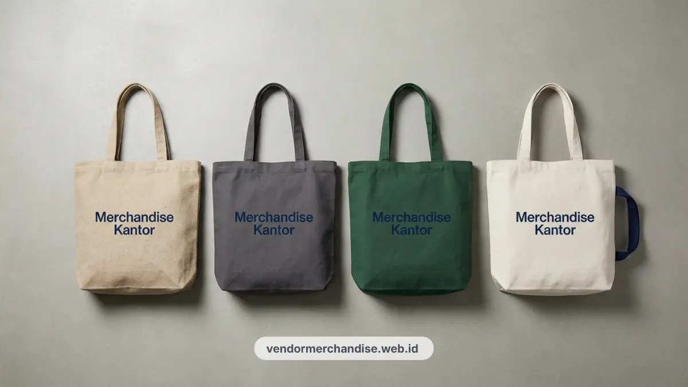

Tote bag kanvas custom logo untuk perusahaan di Bandung tersedia dalam beberapa ukuran dan pilihan kain, dengan teknik sablon yang tahan lama untuk kebutuhan gift karyawan, klien, maupun acara korporat.
Tote Bag Kanvas sebagai Solusi Merchandise Ramah Lingkungan Kantor
Tote bag kanvas menjadi solusi merchandise ramah lingkungan karena dapat dipakai berulang kali sebagai pengganti kantong plastik sekali pakai di lingkungan kerja maupun acara korporat.
Banyak instansi dan perusahaan di Bandung mulai mengganti kantong plastik pada acara internal dengan tote bag kanvas sebagai wadah dokumen, merchandise event, atau starter kit karyawan baru.
Kebiasaan ini sejalan dengan kampanye pengurangan sampah plastik yang semakin umum diterapkan di lingkungan perkantoran maupun komunitas kreatif.
Karena bentuknya yang fungsional, tote bag kanvas custom logo juga sering dipakai karyawan di luar jam kerja, sehingga logo perusahaan lebih sering terlihat dibanding merchandise yang hanya dipakai sesekali.
Pilihan Produk Tote Bag Kanvas Custom Logo untuk Kantor
Berikut beberapa pilihan tote bag kanvas custom logo yang umum dipesan perusahaan untuk kebutuhan gift karyawan, klien, atau acara korporat:
- Tote bag kanvas katun polos dengan sablon logo satu warna, cocok untuk kebutuhan harian karyawan.
- Tote bag kanvas blacu dengan tekstur natural, sering dipilih untuk kesan merchandise yang lebih earthy.
- Tote bag kanvas dengan resleting, cocok untuk menyimpan dokumen atau perangkat kerja ringan.
- Tote bag kanvas tali panjang selempang, praktis dipakai saat menghadiri seminar atau kunjungan klien.
- Tote bag kanvas ukuran besar untuk kebutuhan gift bag pada acara gathering atau CSR perusahaan.

Setiap pilihan dapat disesuaikan dengan warna kain, posisi logo, dan jumlah pesanan sesuai kebutuhan acara.
Jenis Kain dan Teknik Sablon yang Direkomendasikan
Kain kanvas katun dengan teknik sablon rubber adalah kombinasi yang paling direkomendasikan karena menghasilkan tampilan logo yang rapi dan tahan lama saat dicuci berulang kali.
Beberapa kombinasi bahan dan teknik cetak yang umum dipakai:
- Kanvas katun 10 oz: Tekstur lebih halus, cocok untuk logo dengan detail garis tipis.
- Kanvas blacu: Lebih ringan dan ekonomis, cocok untuk pesanan dalam jumlah besar.
- Sablon rubber: Hasil cetak timbul, warna solid, tahan lama untuk pemakaian harian.
- Sablon plastisol: Cocok untuk desain dengan gradasi warna atau detail lebih rumit.
Pemilihan kombinasi ini sebaiknya disesuaikan dengan kompleksitas logo perusahaan dan frekuensi pemakaian tote bag oleh karyawan atau klien.
Ukuran Tote Bag yang Ideal untuk Kebutuhan Kantor
Ukuran tote bag yang ideal untuk kebutuhan kantor umumnya berkisar antara ukuran ringkas untuk membawa dokumen A4 hingga ukuran besar untuk kebutuhan gift bag acara.
Beberapa panduan ukuran yang umum dipakai perusahaan:
- Ukuran kecil hingga sedang: Cocok untuk membawa laptop tipis, dokumen, atau perlengkapan pribadi karyawan.
- Ukuran standar A4: Paling sering dipesan karena fleksibel untuk kebutuhan dokumen kantor sehari-hari.
- Ukuran besar: Dipakai sebagai wadah gift set berisi merchandise lain seperti mug atau notes saat acara korporat.
Penyesuaian ukuran ini membantu tote bag tetap fungsional sesuai kebutuhan penerima, baik untuk pemakaian harian maupun kebutuhan acara tertentu.
Ide Desain Minimalis untuk Tote Bag Kanvas Perusahaan
Desain minimalis dengan satu warna logo dan tata letak sederhana umumnya lebih disukai karena terlihat profesional dan lebih mudah dipadukan dengan berbagai gaya pemakaian sehari-hari.
Beberapa ide desain yang dapat dipertimbangkan:
- Logo perusahaan berukuran sedang di bagian depan tanpa elemen tambahan yang ramai.
- Kombinasi logo dengan tagline singkat perusahaan atau nama program CSR.
- Warna kain natural dipadukan dengan satu warna sablon agar kesan ramah lingkungan lebih terasa.
- Penempatan logo di pojok tote bag untuk kesan desain yang lebih kasual dan fleksibel dipakai di luar kantor.
Pendekatan desain yang sederhana membuat tote bag lebih fleksibel dipakai karyawan maupun klien di berbagai situasi, tidak terbatas pada lingkungan kerja saja. Anda juga dapat mengeksplorasi berbagai pilihan koleksi tote bag merchandise kantor unggulan kami.

Pesan Tote Bag Kanvas Custom Logo untuk Perusahaan Anda
Tim Vendor Merchandise Kantor melayani pemesanan tote bag kanvas custom logo dengan berbagai pilihan bahan, ukuran, dan teknik sablon sesuai kebutuhan perusahaan Anda di Bandung.
Hubungi Vendor Merchandise Kantor sekarang untuk konsultasi desain dan estimasi jumlah pesanan tote bag kantor Anda.